Videos
Fumage Project
80s TV Intro Parody
Film School Jeopardy
Visual Art
Digital Image Composition
)X i died
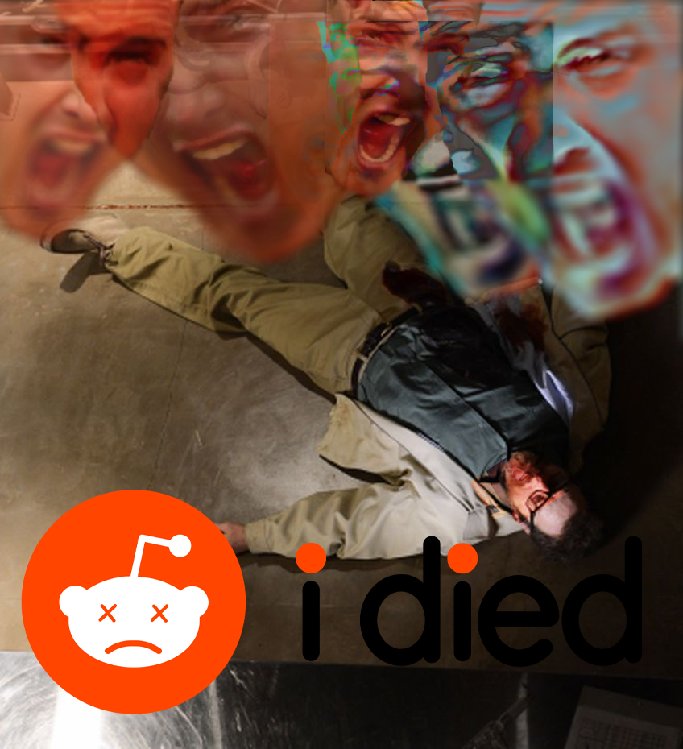First project of the class year, it's a picture that represents how some fans respond to the worst news about their favorite characters, and the internet reaction that is soon to follow.
Glitch Art
HEADERASED

WISH I WASN'T̩͆ ̪̿HE͌͢R̝̥̫̮͋́͊̀͟͞Ê̬̩̳͇͈͋̅̂̕
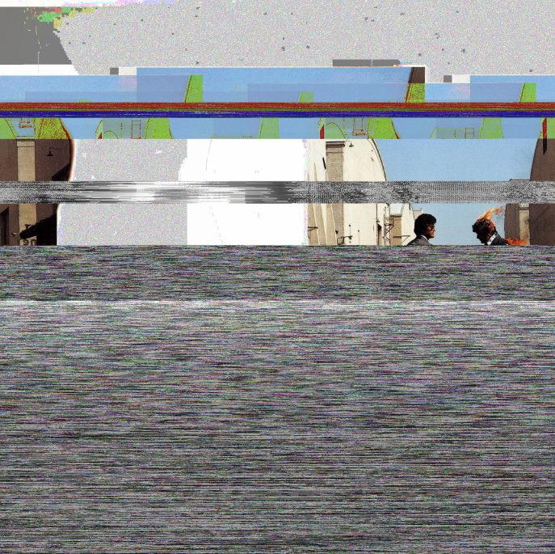Richard Got Into The Calx Again...

Playing around with images from old album covers and movie posters to try to recontextualize and make the works feel broken, but as if in their broken state they are revealing elements of their true self to us.
3D Art Remix
Big Daddy Maid Model
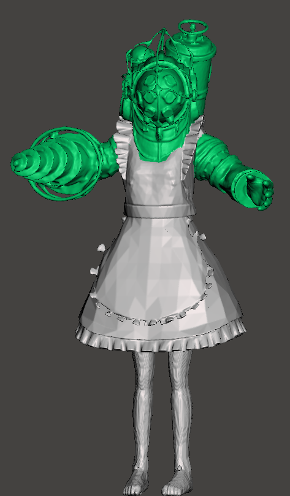 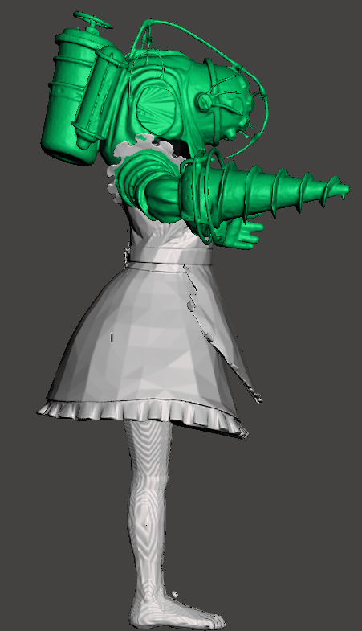 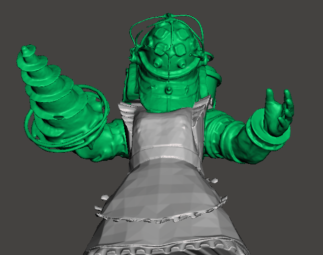
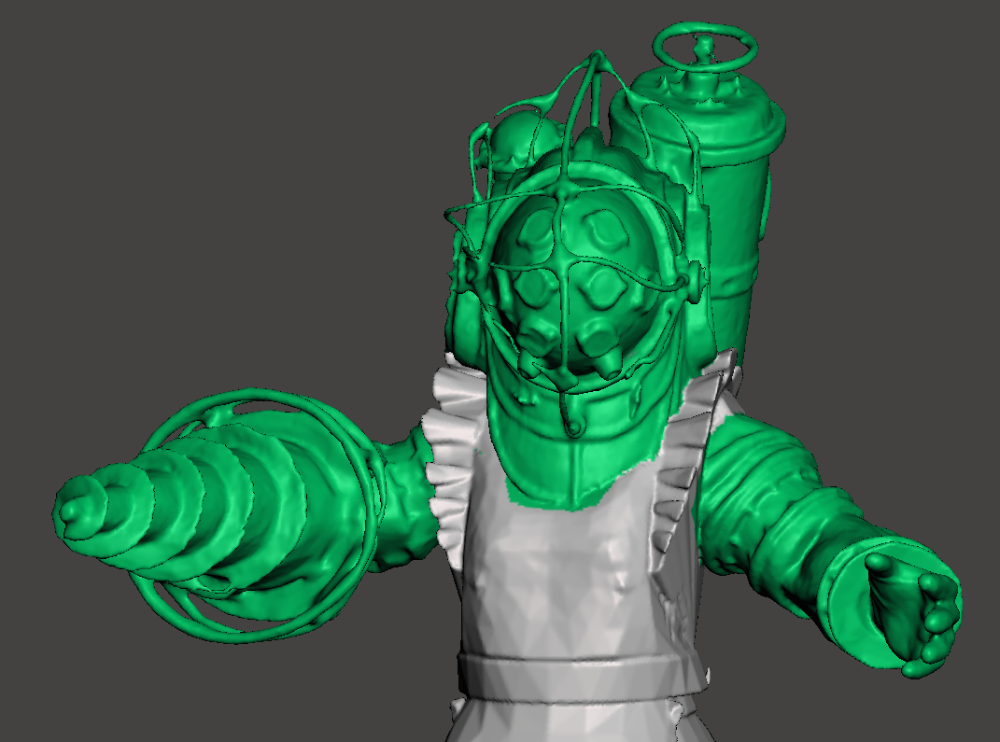
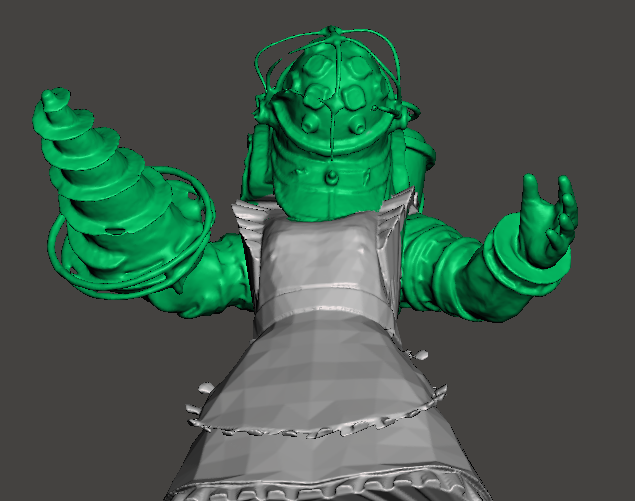
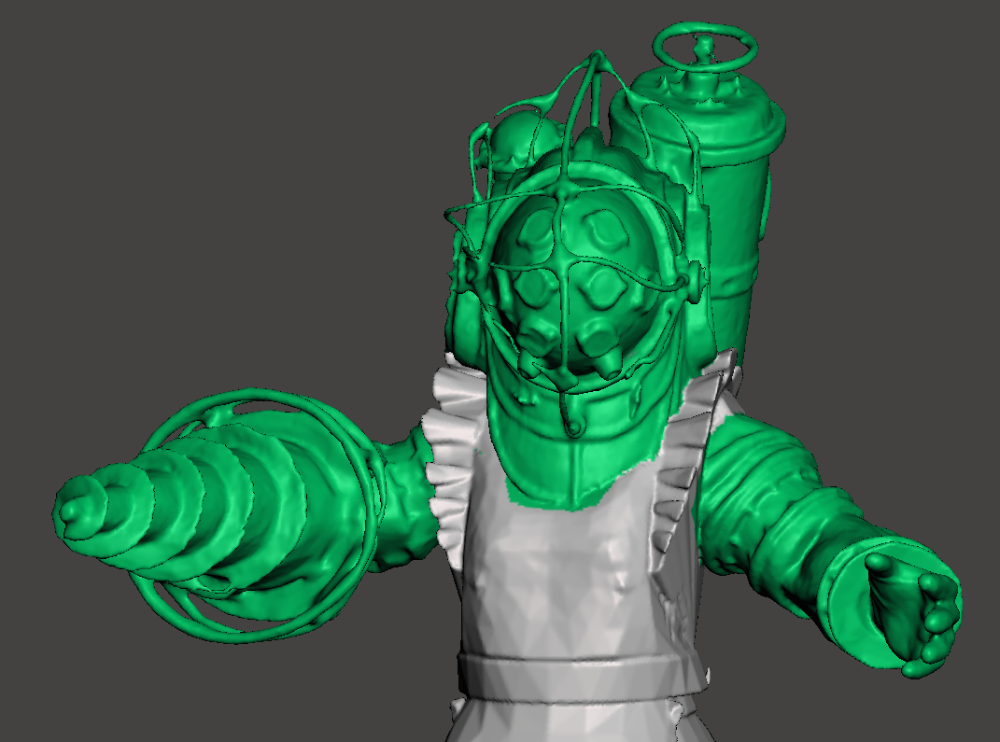
In an alternative universe of the BioShock canon, where Atlas’s plans do not come to fruition, Andrew Ryan continues to grow his great underwater utopia. Years pass by, and an older Ryan, less strong on his altruistic beliefs and becoming as growing Rapture to become as big and capitalist hungry as the United States he left, begins to see a problem with the incoming tourists that generate most of Rapture’s revenue. The biggest seems to be that while the Big Daddies are a draw for the mainlanders to see, many haven’t gotten use to the sight of them or simply won’t come down near one, after the Great Daddy Massacre of ‘99, where 5 rouge daddies ended up murdering thousands of splicer, yet one regular citizen got in the way. The image of the Daddies, while iconic to Rapture, have started to leave a negative mark on their financial progress. Also seeing the opportunity from the growing Japanese tourists who have dominated the Big Daddy tours, Ryan and the other leaders of Rapture decide to placate to that audience. However, Ryan also becoming a huge shut-in weeaboo over the years who only watches anime, could only draw from this tap of knowledge when asked what he thought would make tourists calm. “Anime. Maids.” Ryan said. And so, it was, The Big Daddies are now officially 100% percent more kawaii, exude moe galore, and also function to now follow and be the servants of the visitors to Rapture. Will the plan work? Only time will tell, here’s the first mock up.
Glitch GIFS
WATCH THE MONITORS

GOOD NEWS FOR OUR CITIZENS

AND NOW SOME BAD NEWS...
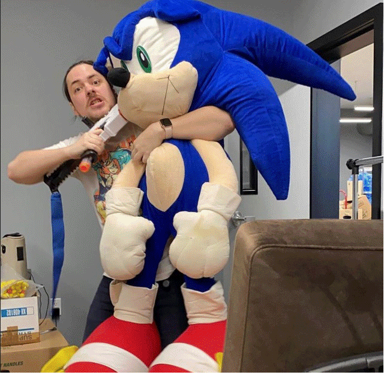PLEASE HELP FIND THIS LOST CHILD!

NEVERMIND, HE'S DEAD )x

For this project...
Dias De los Beisbol
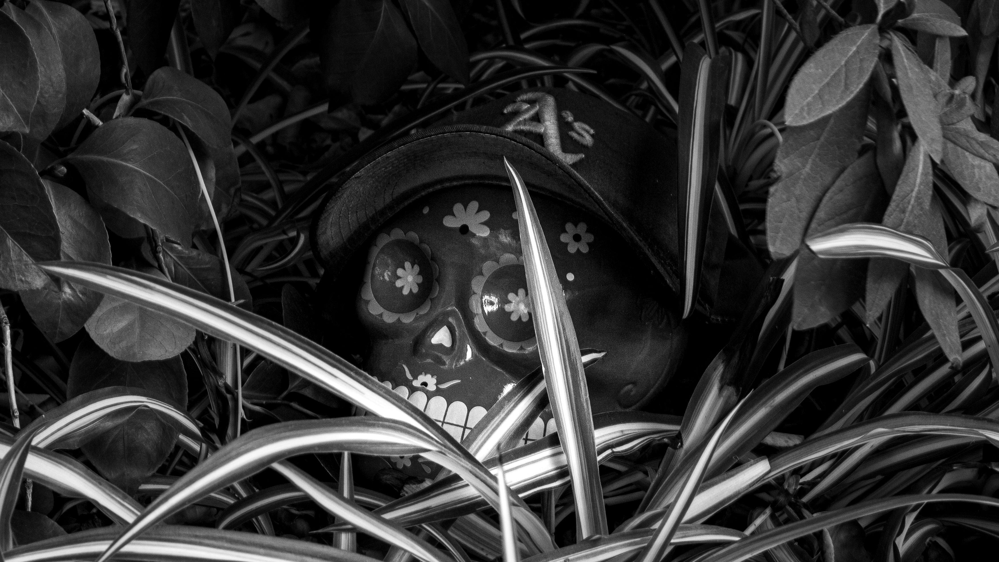 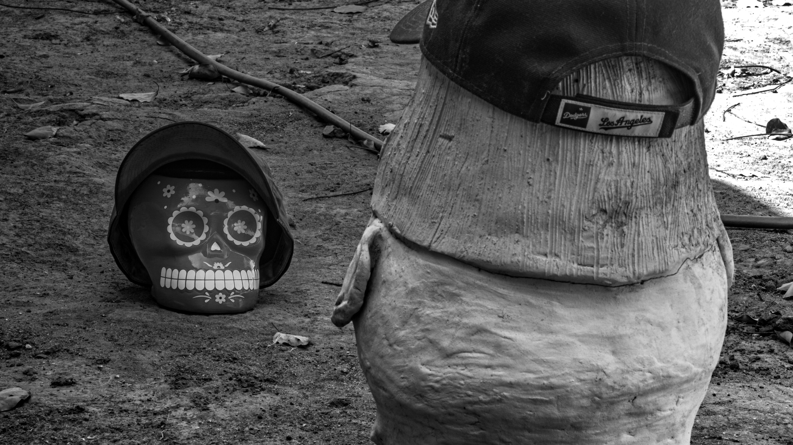 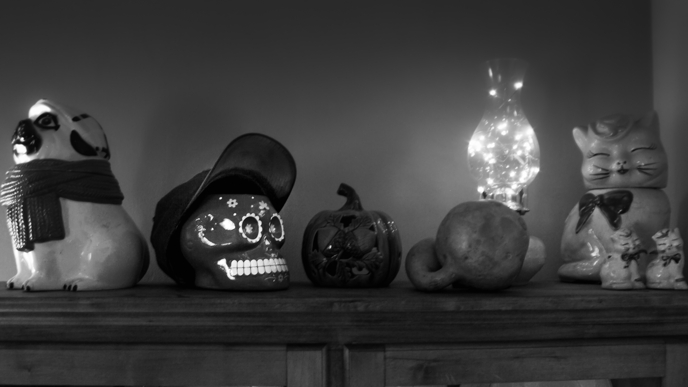 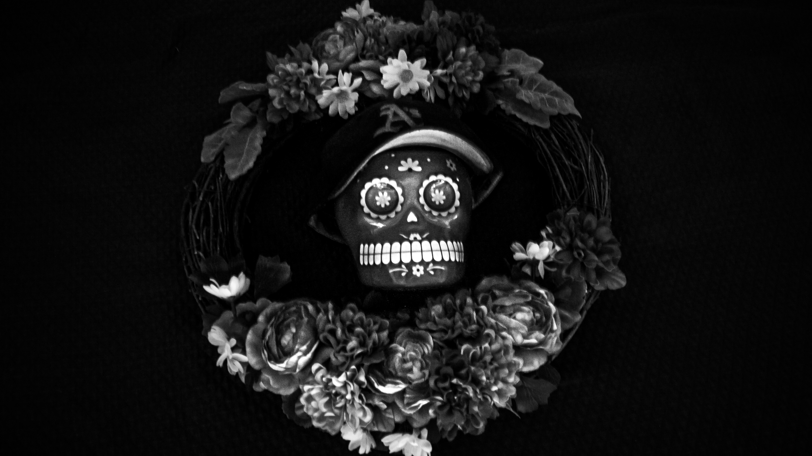In these series of photographs...
Tarantin-toes
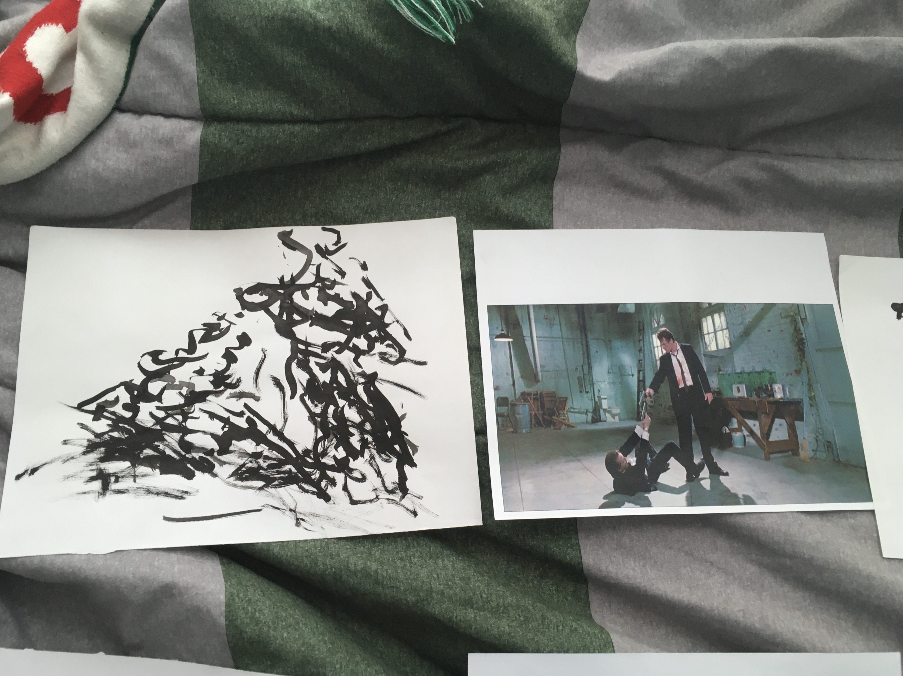 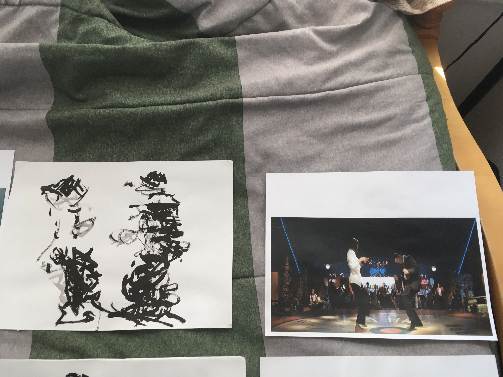 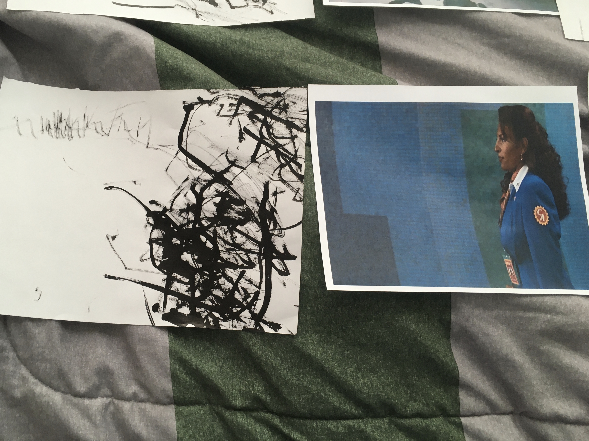 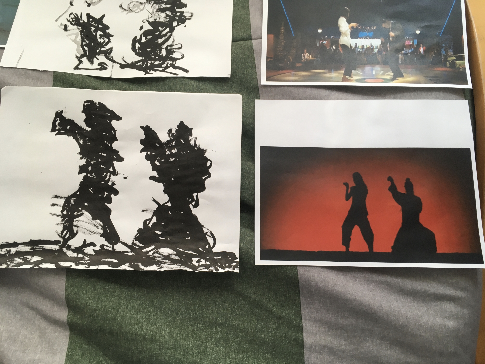I need some protection.